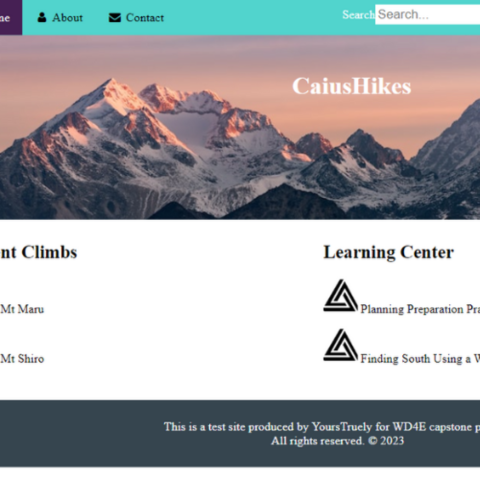

WD4E-Capstone
In April of 2023, I completed my first course in web development. The course, WebDesign4Everyone (WD4E), was a 6-week course given at the University of Michigan. I was nervous about turning in my first web page and this final project. I was excited that I passed, and it earned me my first certificate. What a great springboard of a project this was! It would encourage me to go on to get another certificate. Colleen Van Lent's advice during the course would stick with me when I had problems developing something for the web.
Updated Code: CodePen April 2023
Project Requirements:
Lessons Learned: This project was my first time coding a page unsupported, and so it taught me how to write HTML and CSS, to make a multi-page website, locate resources to help guide me in creating objects, and to locate resources to ensure my code is accessible and standards compliant.
Continued Development: I was nervous about submitting this project because I wondered if I had done enough. Things I'd like to have made better included: the navigation was sticky, but the spacing is off, the hero image doesn't quite fit the section it is in, the responsive design isn't as functional as it should be, and most of all, I'd like to have added more content to the site look and feel more alive and attractive.